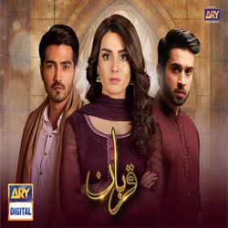
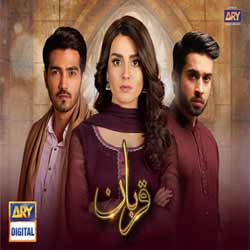

Iqra Aziz Hussain (née Aziz; born November 24, 1997) is a Pakistani actress who works in Urdu television known for her portrayals in social to comic girl next door. She is the recipient of several accolades, including three Lux Style Awards and four Hum Awards.[4] Aziz made her acting debut in 2014 with Kissey Apna Kahein. She had her first lead role in the 2015 drama Muqaddas. Subsequently, she has appeared in notable shows including, Choti Si Zindagi (2016), Qurban (2018), Raqeeb Se and Khuda Aur Muhabbat 3 both (2021). Aziz established herself with the 2018 social comedy drama Ranjha Ranjha Kardi which earned her the Lux Style Award for Best Actress Critics Choice and is recognised for her comic portrayal of Ajiya Nazakat in Suno Chanda (2018), for which she gained praise and won the Hum Award for Best Actress Popular and Lux Style Award for Best TV Actress.[5] After a brief hiatus, she returned to television with family drama Mannat Murad (2023) which failed to leave an impact. Aziz is married to actor and writer Yasir Hussain, with whom she has a son.
 
These are two famous drama of her.The acting,story and content are amazing here.I also love these two.The qurban drma based on a sad and such an emotional love story.On the other side,Suno Chanda is an incredible funny,cheerful love story.They have created a popular place in pakistani drama industry...

These are two famous drama of her.The acting,story and content are amazing here.I also love these two.The qurban drma based on a sad and such an emotional love story.On the other side,Suno Chanda is an incredible funny,cheerful love story.They have created a popular place in pakistani drama industry...